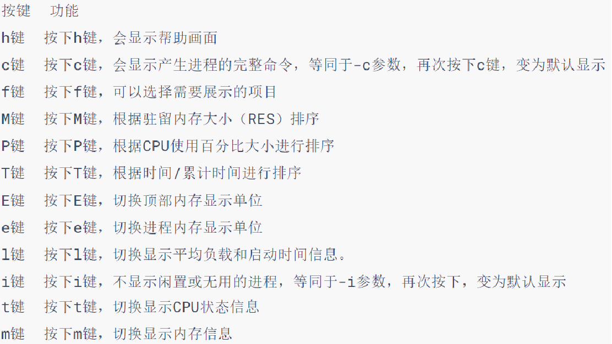
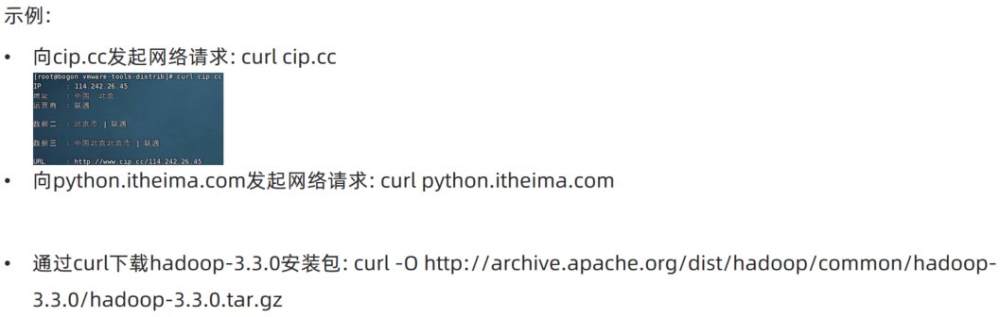

linux系统学习笔记
https://www.bilibili.com/video/BV1n84y1i7td
一、准备
简介
组成：Linux系统内核+系统级应用程序
发行版：CentOS、Ubuntu等
- 基础命令相同
- 软件安装操作有所不同
虚拟机
虚拟机：模拟硬件，并给虚拟硬件安装真实的操作系统
虚拟化软件
- VMware Workstation 16
- 确保虚拟网卡安装成功
系统安装
远程链接
图形化和命令行操作模式
- Linux图形化不好用、不稳定。命令行高效、直观、资源占用低、程序运行稳定
FinalShell
IP地址

虚拟机快照
- 学习过程损坏操作系统后，可以快速还原
- 虚拟机关机创建快照，速度很快
- VMware Workstation 的Player版本没有，Pro版本有该功能
二、开始
目录结构
- 树形结构；没有盘符，只有根目录 /
- Linux分隔符是/，Windows是\
命令入门
- Linux终端：Terminal
- 启动终端时，默认加载的目录是用户的HOME目录
命令通用格式
命令，选项，参数（目标）
1command [-options] [parameter]目录操作命令
ls 命令
xxxxxxxxxx11ls [-a -l -h] [路径]以平铺形式列出当前工作目录下的内容
-a 全部内容，包括隐藏文件和文件夹
- .开头的文件名自动隐藏
-l 列表形式，展示信息
-h -l配合，列出文件大小
混合使用选项
xxxxxxxxxx21ls -l -a2ls -lacd命令
xxxxxxxxxx11cd [路径]切换工作目录
不写路径，回到用户HOME目录
- 相对路径：开头不写/
- 绝对路径：/开头
特殊路径符
- . 当前目录
- .. 上级目录
- ~ HOME目录
pwd
- 打印当前工作目录
- 无参数和选项
mkdir
xxxxxxxxxx41mkdir [-p] Linux路径(绝对/相对)2#eg3mkdir $/empty4mkdir $/f1/f2- 创建文件夹
- -p 自动创建不存在的父目录
- home外的目录有权限问题
文件操作命令
touch 创建文件
xxxxxxxxxx31touch Linux路径2#eg3touch test.txt- 创建文件
cat 查看文件内容
xxxxxxxxxx11cat Linux路径- 查看文件内容，全部显示
more 多页查看文件
xxxxxxxxxx11cat Linux路径- 查看文件内容，支持分页
- 空格翻页，q退出查看
cp 复制文件
xxxxxxxxxx11cp [-r] 源路径 目标路径- copy 文件/文件夹
- -r 递归（复制文件夹的子项目）
mv 移动/重命名文件
xxxxxxxxxx31mv 源路径 目标路径（可以改名）2#修改文件名3mv test1.txt test2.txt- move 移动文件/文件夹
rm 删除文件
xxxxxxxxxx11rm [-r -f] 路径1 路径2 ...remove 删除文件/文件夹
-r 递归（删除文件夹的子项目）
-f 强制删除（无提示）
支持通配符*
test*匹配test开头*test*test*
这是危险的命令，特别是管理员模式rm -rf /*
临时进入管理员
su root
- 切换，输入密码
exit
- 退出，回到普通用户
查找命令
which
xxxxxxxxxx11which 命令- 查看命令所使用的二进制文件存放位置
find
x1find 起始路径 -name "被查找文件名"2find 起始路径 -size +|-n [kMG]3#当前文件夹中大于100MB的文件4find ./ -size +100 M5
-name 按文件名查找文件
- 文件名可以使用通配符*
-size 按文件大小查找文件
- +大于，-小于，n数值，k/M/G单位
文本过滤/统计
grep命令查找/过滤
xxxxxxxxxx11grep [-n] "关键字" 文件路径- 作用：在文件中通过关键字过滤行
- -n 在结果中显示匹配的行的行号
- 关键字
- 文件路径：待过滤内容的文件路径；可作为管道符的输入

wc命令统计
xxxxxxxxxx11wc [-c -m -l -w] 文件路径- 作用：统计文件的行数、单词数量等
- -c 统计字节数（bytes
- -m 字符数
- -l 行数（line
- -w 单词数（word
- 不写选项，输出：行数、单词数、字节数、文件名
- 文件路径：待过滤内容的文件路径；可作为管道符的输入

echo和tail
echo
xxxxxxxxxx31echo 输出的内容2echo "输出的内容"3echo `命令`- 输出指定内容
- 使用反引号`，可以使内容作为命令执行
tail命令
xxxxxxxxxx31tail [-f -num] Linux路径2#eg3tail [-f -20] text.txt- 作用：查看文件尾部内容
- -f 表示持续追踪，ctrl+c 停止
- -num 表示查看尾部行数，不写默认10行
管道符
将管道左侧命令的结果，作为右边的输入
xxxxxxxxxx131#eg2cat text.txt | grep "text" 3#将左侧获取的文件内容，作为右侧过滤命令的输入4
5#eg26ls -l | grep "text"7#查找单前路径下的，文件名含有"text"的文件8ls -l | wc -l9#统计单前路径下的文件/文件夹(实测发现有非文件行)10
11#eg3 嵌套使用12cat text.txt | grep "test" | wc -l13#获取、过滤、统计
重定向符
>将左侧命令的结果，覆盖写入符号右侧指定的文件中>>将左侧命令的结果，追加写入符号右侧指定的文件中
vi编辑器
vim是vi的加强版本，有不同颜色字体
三种工作模式
- 命令模式
- 输入模式
- 底线命令模式
打开文件
xxxxxxxxxx21vi 文件路径2vim 文件路径
命令模式快捷键


底线命令快捷键

三、用户和权限
多用户管理模式进行管理权限
Linux最大权限账户：root（超级管理员）
普通用户
- 在其home目录不受限制
- 在其他目录，大多数情况是只读/执行权限，无修改权限
切换账户
xxxxxxxxxx11su [-] [用户名]- Switch User
-表示在切换用户后加载环境变量- 用户名，不写切换到root
- 普通用户切换到其他用户需要密码，root用户切换到其他用户无需密码
xxxxxxxxxx11exit
- 切换到上一个用户
sudo
xxxxxxxxxx11sudo 其他命令
- 为命令临时赋予root权限（需要密码）
- 该用户需要有root认证
为普通用户配置sudo认证
xxxxxxxxxx21su -2vim /etc/sudoers
用户、用户组管理
- 可以配置多个用户、用户组，用户可以加入多个用户组中
- 针对用户的权限控制、针对用户组的权限控制
用户组
xxxxxxxxxx51groupadd 用户组名2#添加用户组3
4groupdel 用户组名5#删除用户组用户
xxxxxxxxxx111useradd [-g -d] 用户名2#创建用户3
4userdel [-r] 用户名5#删除用户6
7id [用户名]8#查看用户9
10usermod -aG 用户组 用户名11#修改用户所属组查看系统中的用户
xxxxxxxxxx71getent passwd2#查看系统中的用户信息3#用户名：密码（x隐藏）：用户ID：组ID：描述信息：HOME目录：执行终端（默认bash）4
5getent group6#查看系统中的用户组信息7#组名称：组认证（x）：组ID查看权限信息


变更权限
chmod
xxxxxxxxxx131chmod [-R] 权限 文件或文件夹2#eg3chmod u=rwx,g=rx,o=x hello.txt4#修改权限为rwxr-x--x5#所属用户有rwx权限，所属用户组有rx权限，其他用户组有x权限6#u:user, g:group, o:other7#r:read, w:write, x:执行8
9#使用数字序号简写权限10chmod 751 hello.txt11#三位数字分别表示：u、g、o的权限12#0:--- 1:--x 2:-w- 3:-wx 4:r-- 5:r-x 6:rw- 7:rwx13#r4,w2,x1相加即可得到权限- 只有文件所属用户和root用户可以修改
- 作用：修改文件、文件夹的权限信息
- -R 对文件夹内的全部内容应用相同操作

使用数字
chown
xxxxxxxxxx11chown [-R] [用户][:用户组] 文件/文件夹- 只有root可以执行
- 作用：可以修改文件/文件夹的所属用户和用户组
四、实用操作
快捷键
| 按键 | 作用 |
|---|---|
| ctrl+c | 强制停止命令程序 |
| ctrl+d | 退出/登出账户，退出特定程序的特定页面（比如python，但是不能用于vi） |
| ctrl+r | 输入内容，匹配历史命令；回车执行，左右键得到 |
| ctrl+l | 清空终端内容（clear命令） |
history命令：查看历史输入过的命令 ,配合grep筛选命令和管道符使用!前缀：自动执行匹配前缀的命令
光标移动
| 按键------------ | 作用---光标移动----------------------------------------------------------------------------- |
|---|---|
| ctrl+a | 跳到命令开头 |
| ctrl+e | 跳到命令结尾 |
| ctrl+键盘左键 | 向左跳一个单词 |
| ctrl+键盘右键 | 向右跳一个单词 |
软件和服务
软件安装
- CentOS系统：.rpm,yum安装器
- Ubuntu系统：.deb,apt安装器

yum命令
xxxxxxxxxx41yum [-y] [install | remove |search] 软件名称2#eg3su -4yum -y wget- 在centOS中使用，需要root权限、需要联网
- 作用：安装|卸载|搜索安装包，安装会自动安装依赖项
- -y 选项：自动确认，无需手动确认安装/卸载过程
apt命令
- 在Ubuntu中使用，和yum一样
控制服务
systemctl命令
xxxxxxxxxx71systemctl start | stop | status | enable | disable 服务名2#启动/关闭/查看状态/开启开机自启/关闭开机自启 系统服务3
4#eg5yum install -y ntp6systemctl start ntpd7#该软件安装后自动注册为系统服务ntpd- 控制/查看 系统服务
软链接
软链接：将文件/文件夹链接到其他位置，类似windows的快捷方式
ln 命令
xxxxxxxxxx11ln -s 被链接的文件/文件夹 目的地- -s 创建软链接

日期和时区
date命令
可以+-日期

修改系统时区
xxxxxxxxxx41su -2rm -f /etc/localtime3#ls /usr/share/zoneinfo/Asia | grep "Harbin"4ln -s /usr/share/zoneinfo/Asia/Harbin /etc/localtime
ntp程序
- 联网自动校准系统时间
xxxxxxxxxx81#安装2yum -y install ntp3#开启4systemctl start ntpd5#开机自启6systemctl enable ntpd7#手动校准时间8ntpdate -u ntp.aliyun.com
网络地址
IP与主机
IP地址
- 对外联络地址
- 查看ip地址：
ifconfig 127.0.0.1本机0.0.0.0本机、确定绑定端口、表示任意IP
主机名
xxxxxxxxxx41#查看主机名2hostname3#修改主机名4hostnamectl set-hostname 主机名域名解析/主机名映射
- 检查私人地址本
/etc - 联网DNS服务器
- 检查私人地址本
虚拟机固定IP

步骤：
虚拟化软件配置IP地址网关和网段
- VM->编辑->虚拟网络编辑器->更改设置
- 给予管理员权限
- 修改网关

在Linux中修改配置文件固定IP
进入管理员模式
打开配置文件
vi /etc/sysconfig/network-scripts/ifcfg-ens33修改
xxxxxxxxxx11BOOTPROTO="static"添加
xxxxxxxxxx41IPADDR="192.168.88.130"2NETMASK="255.255.255.0"3GATEWAY="192.168.88.2"4DNS1="192.168.88.2"保存配置文件
重启网关指令
xxxxxxxxxx11systemctl restart network
网络传输
ping
xxxxxxxxxx11ping [-c num] ip或主机名- 检查该地址是否联通
- -c num 检查的次数，默认无限次
wget
xxxxxxxxxx11wget [-b -f] url- 非交互式文件下载
- -b 选项，后台下载
- -f 选项，持续追踪进度
curl
xxxxxxxxxx21curl baidu.com#发送请求2curl -O xxx #下载文件- 发起网络请求
端口
- 0~1023 公认端口，如ssh服务
- 1024~49151 注册端口，松散地绑定程序
- 49152~65535动态端口，临时使用
查看端口占用情况
xxxxxxxxxx41yum -y install nmap2nmap url3#eg 4nmap 127.0.0.1
进程
进程管理
程序运行时会被操作系统注册为进程，并分配唯一的进程ID
查看进程
xxxxxxxxxx31ps [-e -f]2#eg3ps -ef | grep "xxx"
关闭进程
xxxxxxxxxx11kill [-9] 进程ID- -9 选项表示强制关闭，不加要看进程自身的关闭机制
主机状态
查看资源占用
xxxxxxxxxx11top- 类似资源管理器
- 每五秒刷新
- ctrl+c 或者q键退出
可用选项：

交互式模式中，可用快捷键：

磁盘信息监控
xxxxxxxxxx61#查看磁盘使用率2df [-h]3
4#查看cpu、磁盘信息5iostat [-x] [num1] [num2]6#-x更多信息，刷新时间，刷新次数
网络状态监控
xxxxxxxxxx11sar -n DEV num1 num2- -n 表示查看网络
- DEV表示查看网络接口
- 刷新间隔（不写就查看一次）、查看次数（不填就无限次数）
- rxKB/S
- txKB/S
环境变量
操作系统记录的关键信息
xxxxxxxxxx61#查看系统中的环境变量2env3#进行过滤4env | grep "xxx"5#临时设置环境变量6export 变量名=变量值设置环境变量
- 当前用户：
~/.bashrc文件 - 所有用户：
/etc/profile文件
xxxxxxxxxx101vim ~/.bashrc #编辑文件2source ~/.bashrc #重新加载3
4#eg5touch ~/haha6echo "echo haha" > ~/haha #写入命令7chmod 777 ~/haha #给予执行权限8~/haha #测试命令9vim ~/.bashrc#追加export haha=~/haha10source ~/.bashrcPATH
环境变量PATH：记录了系统命令的执行路径，按顺序搜索
xxxxxxxxxx21echo $PATH2echo ${PATH}设置：
系统用户
xxxxxxxxxx111#添加系统变量2cd /3mkdir myenv4cd myenv5touch haha6echo "echo haha" > haha7chmod 777 haha8vim /etc/profile #尾部追加 export PATH=$PATH:/myenv9source /etc/profile #重新加载10
11haha #测试命令
文件传输
使用终端
- 下载：右键目录中的文件，选择下载，即可将文件下载到电脑中（需要用户有权限）
- 上传：拖拽
命令
xxxxxxxxxx71#安装2yum -y install Lrzsz34#下载5sz 文件路径6#上传（会弹出窗口操作）7rz
压缩和解压
tar或gzip文件
- tar文件是简单组装，没有体积压缩
- gz文件是gzip压缩算法压缩后的文件
xxxxxxxxxx91tar [-c -v -x -f -z -C] 参数1 参数2 ...2#eg压缩3tar -cvf test.tar 1.txt 2.txt4tar -zcvf test.tar.gz 1.txt 2.txt5#eg解压缩6tar -xvf test.tar -C ~/test7tar -zxvf test.tar.gz -C ~/test8#解压到当前路径9tar -xvf test.tar- -c 创建压缩文件（压缩模式）
- -v 显示压缩/解压
- -x 解压模式(和c冲突)
- -f 要创建/解压的文件，必须位置最后
- -z gzip模式
- -C选择解压目的地（解压模式）
zip文件
xxxxxxxxxx11zip [-r] 参数1 参数2 ……- -r 文件夹递归
xxxxxxxxxx31unzip [-d] 参数2#eg3unzip test.zip -d ./test- -d 指定解压路径
- 同名内容会替换
五、实战
MySQL 8.0 在CentOS安装
Linux基础命令
Linux的目录结构

/，根目录是最顶级的目录了- Linux只有一个顶级目录：
/ - 路径描述的层次关系同样适用
/来表示 - /home/itheima/a.txt，表示根目录下的home文件夹内有itheima文件夹，内有a.txt
ls命令
功能：列出文件夹信息
语法：ls [-l -h -a] [参数]
- 参数：被查看的文件夹，不提供参数，表示查看当前工作目录
- -l，以列表形式查看
- -h，配合-l，以更加人性化的方式显示文件大小
- -a，显示隐藏文件
隐藏文件、文件夹
在Linux中以.开头的，均是隐藏的。
默认不显示出来，需要-a选项才可查看到。
pwd命令
功能：展示当前工作目录
语法：pwd
cd命令
功能：切换工作目录
语法：cd [目标目录]
参数：目标目录，要切换去的地方，不提供默认切换到当前登录用户HOME目录
HOME目录
每一个用户在Linux系统中都有自己的专属工作目录，称之为HOME目录。
- 普通用户的HOME目录，默认在：
/home/用户名 - root用户的HOME目录，在：
/root
FinalShell登陆终端后，默认的工作目录就是用户的HOME目录
相对路径、绝对路径
相对路径，非
/开头的称之为相对路径相对路径表示以
当前目录作为起点，去描述路径，如test/a.txt，表示当前工作目录内的test文件夹内的a.txt文件绝对路径，以
/开头的称之为绝对路径绝对路径从
根开始描述路径
特殊路径符
.，表示当前，比如./a.txt，表示当前文件夹内的a.txt文件..，表示上级目录，比如../表示上级目录，../../表示上级的上级目录~，表示用户的HOME目录，比如cd ~，即可切回用户HOME目录
mkdir命令
功能：创建文件夹
语法：mkdir [-p] 参数
- 参数：被创建文件夹的路径
- 选项：-p，可选，表示创建前置路径
touch命令
功能：创建文件
语法：touch 参数
- 参数：被创建的文件路径
cat命令
功能：查看文件内容
语法：cat 参数
- 参数：被查看的文件路径
more命令
功能：查看文件，可以支持翻页查看
语法：more 参数
参数：被查看的文件路径
在查看过程中：
空格键翻页q退出查看
cp命令
功能：复制文件、文件夹
语法：cp [-r] 参数1 参数2
- 参数1，被复制的
- 参数2，要复制去的地方
- 选项：-r，可选，复制文件夹使用
示例：
- cp a.txt b.txt，复制当前目录下a.txt为b.txt
- cp a.txt test/，复制当前目录a.txt到test文件夹内
- cp -r test test2，复制文件夹test到当前文件夹内为test2存在
mv命令
功能：移动文件、文件夹
语法：mv 参数1 参数2
- 参数1：被移动的
- 参数2：要移动去的地方，参数2如果不存在，则会进行改名
rm命令
功能：删除文件、文件夹
语法：rm [-r -f] 参数...参数
- 参数：支持多个，每一个表示被删除的，空格进行分隔
- 选项：-r，删除文件夹使用
- 选项：-f，强制删除，不会给出确认提示，一般root用户会用到
rm命令很危险，一定要注意，特别是切换到root用户的时候。
which命令
功能：查看命令的程序本体文件路径
语法：which 参数
- 参数：被查看的命令
find命令
功能：搜索文件
语法1按文件名搜索：find 路径 -name 参数
- 路径，搜索的起始路径
- 参数，搜索的关键字，支持通配符*， 比如：
*test表示搜索任意以test结尾的文件
grep命令
功能：过滤关键字
语法：grep [-n] 关键字 文件路径
- 选项-n，可选，表示在结果中显示匹配的行的行号。
- 参数，关键字，必填，表示过滤的关键字，带有空格或其它特殊符号，建议使用””将关键字包围起来
- 参数，文件路径，必填，表示要过滤内容的文件路径，可作为内容输入端口
参数文件路径，可以作为管道符的输入
wc命令
功能：统计
语法：wc [-c -m -l -w] 文件路径
- 选项，-c，统计bytes数量
- 选项，-m，统计字符数量
- 选项，-l，统计行数
- 选项，-w，统计单词数量
- 参数，文件路径，被统计的文件，可作为内容输入端口
参数文件路径，可作为管道符的输入
管道符|
写法：|
功能：将符号左边的结果，作为符号右边的输入
示例：
cat a.txt | grep itheima，将cat a.txt的结果，作为grep命令的输入，用来过滤itheima关键字
可以支持嵌套：
cat a.txt | grep itheima | grep itcast
echo命令
功能：输出内容
语法：echo 参数
- 参数：被输出的内容
`反引号
功能：被两个反引号包围的内容，会作为命令执行
示例：
- echo `pwd`，会输出当前工作目录
tail命令
功能：查看文件尾部内容
语法：tail [-f] 参数
- 参数：被查看的文件
- 选项：-f，持续跟踪文件修改
head命令
功能：查看文件头部内容
语法：head [-n] 参数
- 参数：被查看的文件
- 选项：-n，查看的行数
重定向符
功能：将符号左边的结果，输出到右边指定的文件中去
>，表示覆盖输出>>，表示追加输出
vi编辑器
命令模式快捷键

底线命令快捷键

命令的选项
我们学习的一系列Linux命令，它们所拥有的选项都是非常多的。
比如，简单的ls命令就有：-a -A -b -c -C -d -D -f -F -g -G -h -H -i -I -k -l -L -m -n -N -o -p -q -Q -r-R -s -S -t -T -u -U -v -w -x -X -1等选项，可以发现选项是极其多的。
课程中， 并不会将全部的选项都进行讲解，否则，一个ls命令就可能讲解2小时之久。
课程中，会对常见的选项进行讲解， 足够满足绝大多数的学习、工作场景。
查看命令的帮助
可以通过：命令 --help查看命令的帮助手册

查看命令的详细手册
可以通过：man 命令查看某命令的详细手册
Linux常用操作
软件安装
CentOS系统使用：
yum [install remove search] [-y] 软件名称
- install 安装
- remove 卸载
- search 搜索
- -y，自动确认
Ubuntu系统使用
apt [install remove search] [-y] 软件名称
- install 安装
- remove 卸载
- search 搜索
- -y，自动确认
yum 和 apt 均需要root权限
systemctl
功能：控制系统服务的启动关闭等
语法：systemctl start | stop | restart | disable | enable | status 服务名
- start，启动
- stop，停止
- status，查看状态
- disable，关闭开机自启
- enable，开启开机自启
- restart，重启
软链接
功能：创建文件、文件夹软链接（快捷方式）
语法：ln -s 参数1 参数2
- 参数1：被链接的
- 参数2：要链接去的地方（快捷方式的名称和存放位置）
日期
语法：date [-d] [+格式化字符串]
-d 按照给定的字符串显示日期，一般用于日期计算
格式化字符串：通过特定的字符串标记，来控制显示的日期格式
- %Y 年%y 年份后两位数字 (00..99)
- %m 月份 (01..12)
- %d 日 (01..31)
- %H 小时 (00..23)
- %M 分钟 (00..59)
- %S 秒 (00..60)
- %s 自 1970-01-01 00:00:00 UTC 到现在的秒数
示例：
按照2022-01-01的格式显示日期
按照2022-01-01 10:00:00的格式显示日期

-d选项日期计算

支持的时间标记为：
时区
修改时区为中国时区

ntp
功能：同步时间
安装：yum install -y ntp
启动管理：systemctl start | stop | restart | status | disable | enable ntpd
手动校准时间：ntpdate -u ntp.aliyun.com
ip地址
格式：a.b.c.d
- abcd为0~255的数字
特殊IP：
127.0.0.1，表示本机
0.0.0.0
- 可以表示本机
- 也可以表示任意IP（看使用场景）
查看ip：ifconfig
主机名
功能：Linux系统的名称
查看：hostname
设置：hostnamectl set-hostname 主机名
配置VMware固定IP
修改VMware网络，参阅PPT，图太多
设置Linux内部固定IP
修改文件：
/etc/sysconfig/network-scripts/ifcfg-ens33示例文件内容：
xxxxxxxxxx191TYPE="Ethernet"2PROXY_METHOD="none"3BROWSER_ONLY="no"4BOOTPROTO="static" # 改为static，固定IP5DEFROUTE="yes"6IPV4_FAILURE_FATAL="no"7IPV6INIT="yes"8IPV6_AUTOCONF="yes"9IPV6_DEFROUTE="yes"10IPV6_FAILURE_FATAL="no"11IPV6_ADDR_GEN_MODE="stable-privacy"12NAME="ens33"13UUID="1b0011cb-0d2e-4eaa-8a11-af7d50ebc876"14DEVICE="ens33"15ONBOOT="yes"16IPADDR="192.168.88.131" # IP地址，自己设置，要匹配网络范围17NETMASK="255.255.255.0" # 子网掩码，固定写法255.255.255.018GATEWAY="192.168.88.2" # 网关，要和VMware中配置的一致19DNS1="192.168.88.2" # DNS1服务器，和网关一致即可
ps命令
功能：查看进程信息
语法：ps -ef，查看全部进程信息，可以搭配grep做过滤：ps -ef | grep xxx
kill命令

nmap命令
netstat命令
功能：查看端口占用
用法：netstat -anp | grep xxx
ping命令
测试网络是否联通
语法：ping [-c num] 参数
wget命令

curl命令


top命令
功能：查看主机运行状态
语法：top，查看基础信息
可用选项：
交互式模式中，可用快捷键：
df命令
查看磁盘占用

iostat命令
查看CPU、磁盘的相关信息


sar命令
查看网络统计

环境变量
临时设置：export 变量名=变量值
永久设置：
- 针对用户，设置用户HOME目录内：
.bashrc文件 - 针对全局，设置
/etc/profile
- 针对用户，设置用户HOME目录内：
PATH变量
记录了执行程序的搜索路径
可以将自定义路径加入PATH内，实现自定义命令在任意地方均可执行的效果
$符号
可以取出指定的环境变量的值
语法：$变量名
示例：
echo $PATH，输出PATH环境变量的值
echo ${PATH}ABC，输出PATH环境变量的值以及ABC
如果变量名和其它内容混淆在一起，可以使用${}
压缩解压
压缩
tar -zcvf 压缩包 被压缩1...被压缩2...被压缩N
- -z表示使用gzip，可以不写
zip [-r] 参数1 参数2 参数N

解压
tar -zxvf 被解压的文件 -C 要解压去的地方
- -z表示使用gzip，可以省略
- -C，可以省略，指定要解压去的地方，不写解压到当前目录
unzip [-d] 参数

su命令
切换用户
语法：su [-] [用户]

sudo命令

比如：
xxxxxxxxxx11itheima ALL=(ALL) NOPASSWD: ALL在visudo内配置如上内容，可以让itheima用户，无需密码直接使用sudo
chmod命令
修改文件、文件夹权限
语法：chmod [-R] 权限 参数
权限，要设置的权限，比如755，表示：
rwxr-xr-x参数，被修改的文件、文件夹
选项-R，设置文件夹和其内部全部内容一样生效
chown命令
修改文件、文件夹所属用户、组
语法：chown [-R] [用户][:][用户组] 文件或文件夹

用户组管理

用户管理
genenv命令
getenv group，查看系统全部的用户组
getenv passwd，查看系统全部的用户
env命令
查看系统全部的环境变量
语法：env